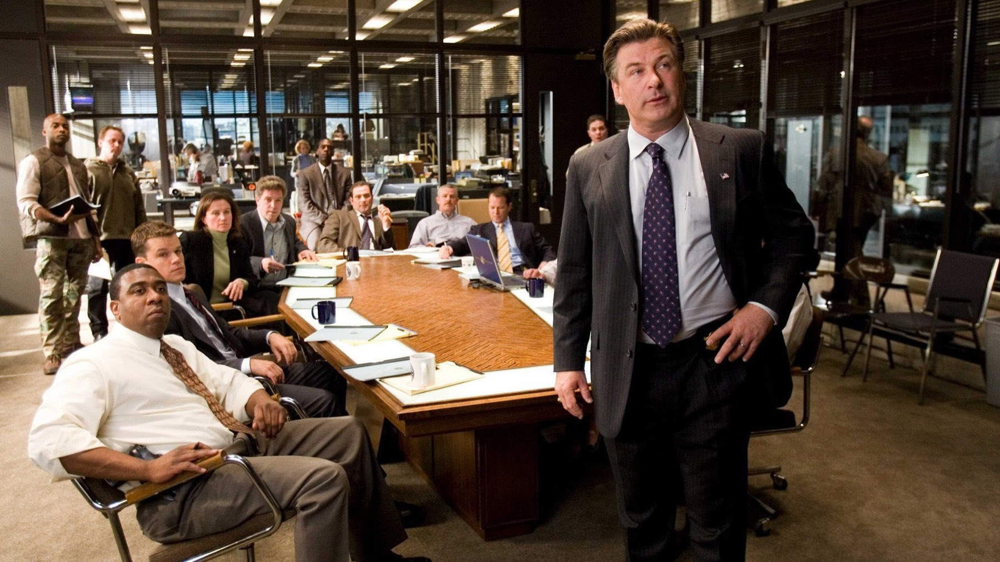

The Departed compie 20 anni: 6 curiosità
Un remake di Hong Kong comprato per 1,75 milioni di dollari, un boss ispirato a un criminale reale, Boston girata soprattutto a New York e l'Oscar che Scorsese aspettava da una vita: il film che ha cambiato la carriera del suo regista, visto da dietro le quinte
Il 6 ottobre 2006 usciva negli Stati Uniti un film in cui due uomini, un poliziotto infiltrato nella mafia irlandese e un criminale infiltrato nella polizia, si danno la caccia senza conoscersi. Vent'anni dopo The Departed è ancora uno dei polizieschi più citati degli ultimi decenni, e ha una storia dietro le quinte più strana di quanto si ricordi: è un remake, ma ha vinto l'Oscar come miglior film; è ambientato a Boston, ma si è girato soprattutto altrove; e il suo cattivo ha un modello nella cronaca vera. Ecco sei cose che aiutano a rivederlo con occhi nuovi, senza svelare nulla della trama.
Da dove viene la storia di The Departed?
Da Hong Kong. Infernal Affairs, uscito il 12 dicembre 2002 e diretto da Andrew Lau e Alan Mak, racconta lo stesso doppio inganno: un agente infiltrato in una triade e una talpa della triade infiltrata in polizia. Il film ebbe un successo enorme in patria, con sette premi vinti su sedici candidature agli Hong Kong Film Awards, tra cui miglior film e miglior regia, e generò due seguiti nel 2003. La casa di produzione di Brad Pitt, la Plan B, e la Warner Bros. acquistarono i diritti del remake nel gennaio 2003 per 1,75 milioni di dollari. La sceneggiatura fu affidata a William Monahan e la storia venne trasportata a Boston, nel mondo della mafia irlandese.

Il boss di Nicholson è esistito davvero?
In parte. Frank Costello, il boss interpretato da Jack Nicholson, si ispira a Whitey Bulger, il capo irlandese-americano della banda di Winter Hill, a Boston. Bulger era una figura reale e inquietante: l'FBI sostenne che dal 1975 fosse un suo informatore, cosa che lui negò sempre, e il suo agente di collegamento lo avvertì di un'imminente incriminazione. Bulger fuggì a fine 1994 e restò latitante fino all'arresto del 22 giugno 2011 a Santa Monica. Costello è un personaggio di finzione, ma l'ispirazione dà al film quell'elemento di realismo e di incertezza pericolosa che lo rende credibile: dietro il personaggio di Nicholson c'è una vicenda che a Boston non è mai stata soltanto un racconto.
Dove è stato girato davvero?
Il film è ambientato a Boston, ma la maggior parte delle riprese si è svolta a New York, per via degli incentivi fiscali dello stato. Le riprese sono iniziate nell'aprile del 2005 e hanno toccato entrambe le città; il budget era di 90 milioni di dollari. La scelta spiega perché il film abbia l'aspetto di una Boston «ricostruita» con strade, bar e uffici di una città diversa: una città dura, fatta di quartieri chiusi e di lealtà ereditate, che Scorsese rende credibile anche quando le inquadrature sono altrove.

Quanti Oscar ha vinto e perché Scorsese era il favorito morale?
Quattro, su cinque candidature, nella cerimonia del 25 febbraio 2007 presentata da Ellen DeGeneres: miglior film, miglior regia, miglior sceneggiatura non originale (Monahan) e miglior montaggio (Thelma Schoonmaker). Per Martin Scorsese fu la fine di una lunga attesa: aveva perso cinque volte come miglior regista prima di allora. A consegnargli la statuetta furono tre amici e colleghi, Francis Ford Coppola, George Lucas e Steven Spielberg. Il film batté Babel, Letters from Iwo Jima, Little Miss Sunshine e The Queen. Il miglior film fu annunciato da Diane Keaton e, curiosamente, da Jack Nicholson, protagonista del film premiato.
Chi era l'unico attore candidato?
Non Leonardo DiCaprio, non Matt Damon e nemmeno Nicholson: l'unica candidatura per un interprete andò a Mark Wahlberg, come miglior attore non protagonista, per il ruolo di Dignam. Anche DiCaprio e Damon, protagonisti di un duello che regge tutto il film, restarono fuori dalle cinque nomination. È un caso curioso, che racconta come i premi guardino spesso il film nel suo insieme, con la regia e il montaggio al posto dei volti, più che i singoli attori. Se vuoi capire perché Schoonmaker ha vinto, riguarda il ritmo con cui le due storie si inseguono senza mai incontrarsi.
Quanto ha incassato e come è stato accolto?
Ha incassato circa 291,5 milioni di dollari nel mondo, di cui 132,4 negli Stati Uniti, più del triplo del suo costo. In Italia, dove arrivò il 27 ottobre 2006 con Medusa Film, superò i 9 milioni di euro nella stagione 2006-2007 e passò prima tra gli eventi speciali della prima edizione della Festa del Cinema di Roma. La critica lo accolse bene: a ottobre 2026 Rotten Tomatoes conta il 91% di recensioni positive su 285. Ai Golden Globe, su sei candidature, vinse soltanto il premio per la regia, a conferma di un favore che si è consolidato con gli anni più che nell'immediato.
Vale la pena rivederlo oggi?
Sì, soprattutto per chi lo ricorda solo per la trama. A distanza di vent'anni colpisce quanto sia compatto: due ore e mezza senza una scena inutile, con un montaggio che tiene in tensione anche quando i personaggi non fanno nulla di spettacolare. È anche un buon punto d'incontro tra lo Scorsese dei gangster classici e quello più recente, a cui si arriva passando da titoli come Killers of the Flower Moon. Lo consigliamo a chi ama i polizieschi dove nessuno è del tutto quello che sembra, e anche a chi ha visto solo l'originale di Hong Kong: il confronto tra i due è la parte più divertente. Per sapere dove vederlo oggi, controlla le piattaforme di noleggio: a ottobre 2026 non risulta in nessun abbonamento in Italia nei dati TMDB.
Domande frequenti
Quando è uscito The Departed in Italia?
Il 27 ottobre 2006, distribuito da Medusa Film, dopo la presentazione alla Festa del Cinema di Roma. Negli Stati Uniti era uscito il 6 ottobre 2006.
The Departed è un remake?
Sì, di Infernal Affairs, film di Hong Kong del 2002 diretto da Andrew Lau e Alan Mak. I diritti del remake furono acquistati nel gennaio 2003 da Plan B e Warner Bros.
Quanti Oscar ha vinto The Departed?
Quattro su cinque candidature: miglior film, miglior regia a Martin Scorsese, miglior sceneggiatura non originale a William Monahan e miglior montaggio a Thelma Schoonmaker.